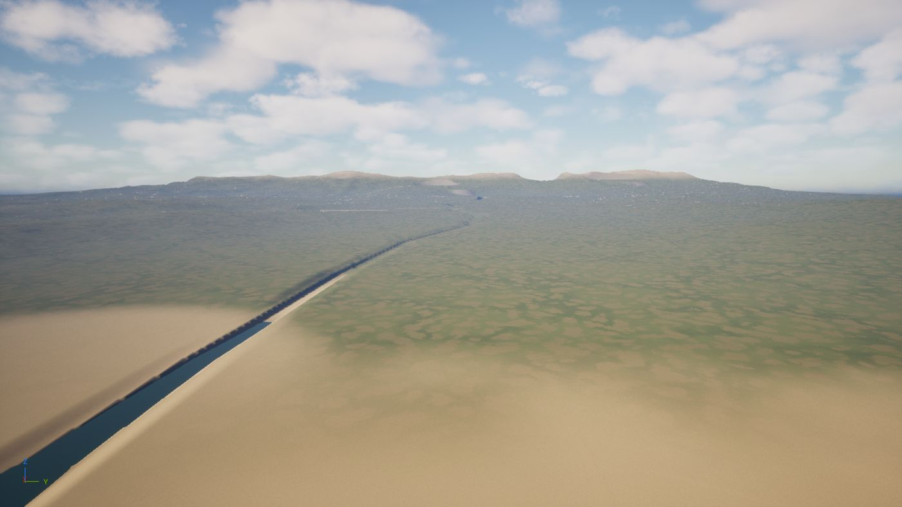
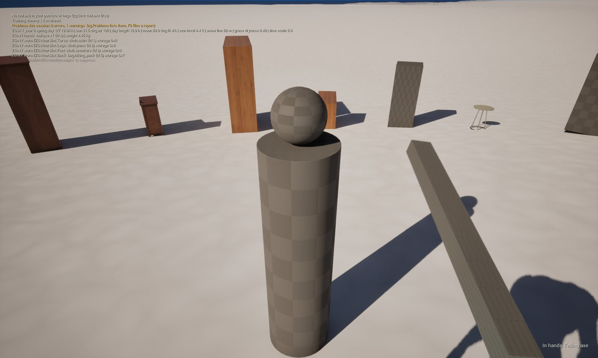
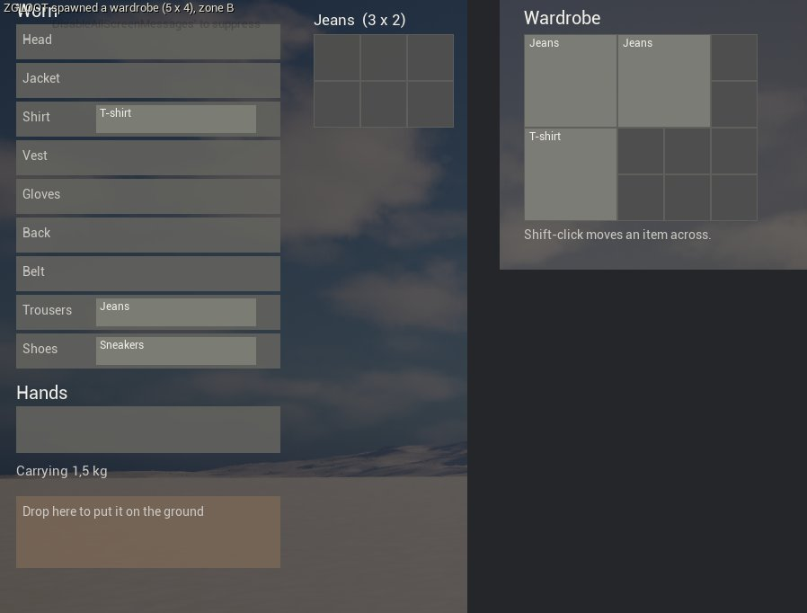
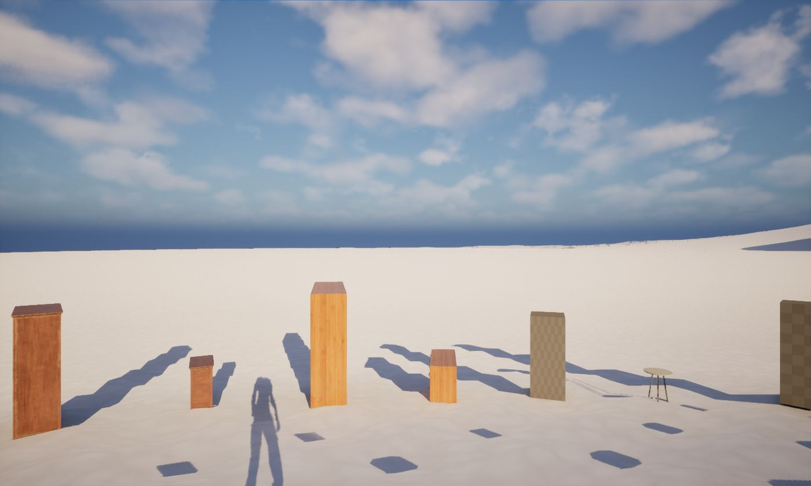
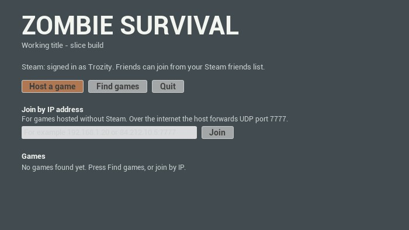
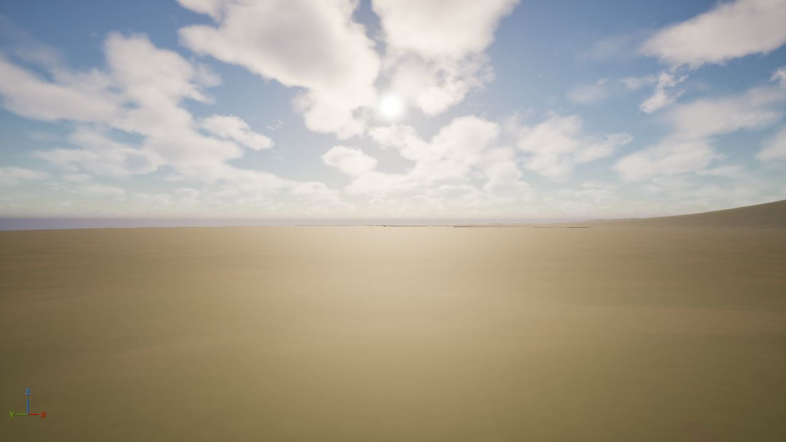
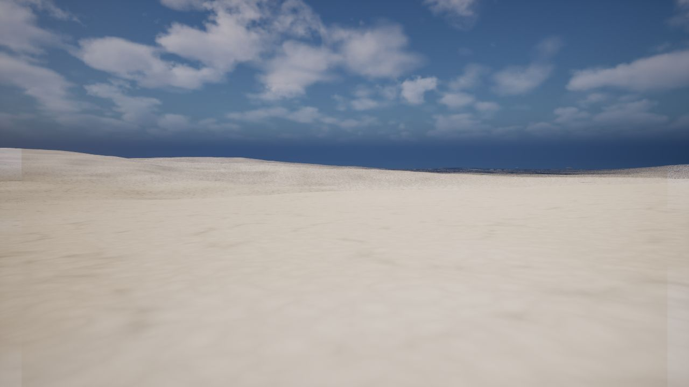

Zombie Survival
An open-world survival game for a group of friends, on a cold Norwegian-style coast. Get out of the town, find somewhere quiet to build, stay warm and dry, and in the end clear the zombies and bring the world back.
Unzip it anywhere and run zombiegame.exe. When a new version is out, the game says so on its start screen and updates itself with one button.

What you can do today
Placeholder art: furniture and boxes stand in for houses and item models until the village and the art passes. Things change and break between versions.





Midday
WinterStaying alive
- Hunger, thirst, body temperature, blood and wetness, shown as plain symptoms, not bars
- Rain soaks what it falls on; a rain jacket keeps your top dry, rain trousers your legs
- You can freeze, starve, die of thirst or bleed out
Fighting
- Knife, hammer, felling axe, or bare fists
- The server decides every hit, so nobody can cheat their swings
- Players can only hurt each other if the host turns PvP on
The world
- A 4 × 4 km map: coast, fjord, river valley, lake, mountains, a town site
- Real sun and moon for 61° N, four seasons, a snow line that moves
- 4 real hours per game day
Getting your friends in
Everyone needs the same version. The start screen tells you when there is a newer one.
Download
Get the zip above and unzip it anywhere, for example in Documents. Windows may ask to allow the game through the firewall: allow it.
Open Steam
Start Steam and sign in before the game. Steam connects you, so nobody has to forward ports.
Host or join
One of you presses Host a game. The others press Find games, or the host invites them from the Esc menu while their game is open.
Talk
Hold V to talk to players near you. Voice fades with distance.
A world that keeps running
Any PC can run the game as a server with no window and no player of its own, so friends can play when the host is away.
- Unzip the game on the PC that will be the server.
- Edit
zombiegame\ServerSettings.iniif you like (below). - Start Steam on that PC, then run
start_server.bat. It restarts the server if it stops; close its window to stop it. - Friends find it under Find games. Without Steam, add
-nosteamto the bat file; friends then join by IP, and UDP port 7777 must be forwarded to the server.
| Setting | What it does |
|---|---|
| ServerName | The name friends see in the list |
| Map | The map to run |
| MaxPlayers | Most players at once (12) |
| TickRate | Server updates a second (30). Higher is smoother and uses more CPU |
| PvP | Players can hurt each other (off) |
| Preset | Difficulty: casual, standard or hardcore (coming) |
What changed
Newest first. The game updates itself from its start screen; you can also download any version here.
The first public version is on its way.
One village that holds the whole game
Before the world grows, a small area near the town gets every part of the game and is made fun for an evening with friends.
- Play onlineSteam, voice, a server, updates
- MeleeKnife, hammer, axe
- Hands and bodiesAnimated arms and bodies
- Stamina and coldCold that changes how you play
- Fire and craftingWood, campfires, torches
- The villageReal houses to search
- ZombiesThey hear you
- A baseTake over a cabin or build one
- First gunsRare and loud
- WeatherRain and snow you can see
Press F9
F9 in the game opens “Report a problem”. Write what happened; a screenshot and the recent log are saved with it in zombiegame\Saved\BugReports. Send that folder along and it gets looked at.